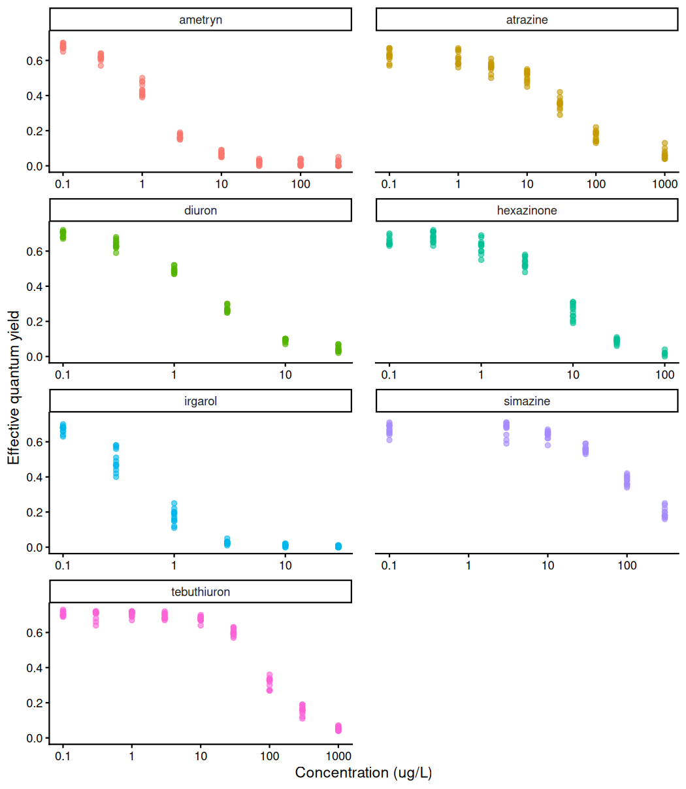
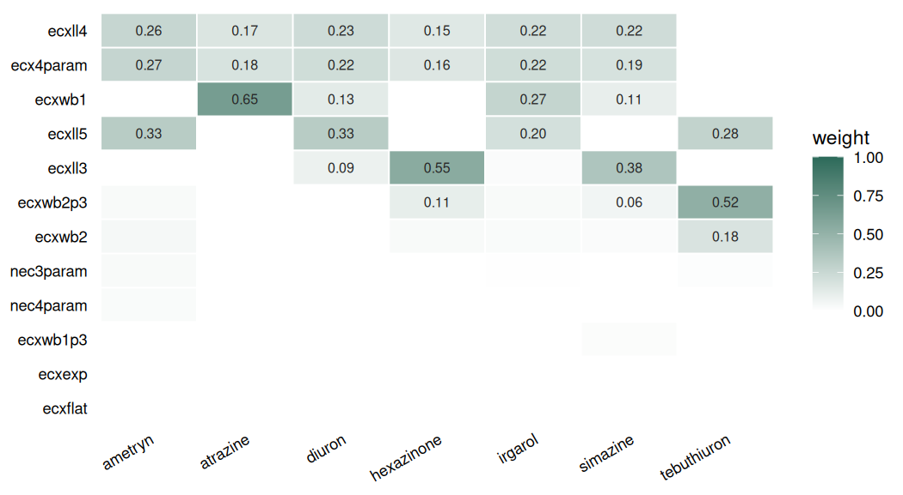
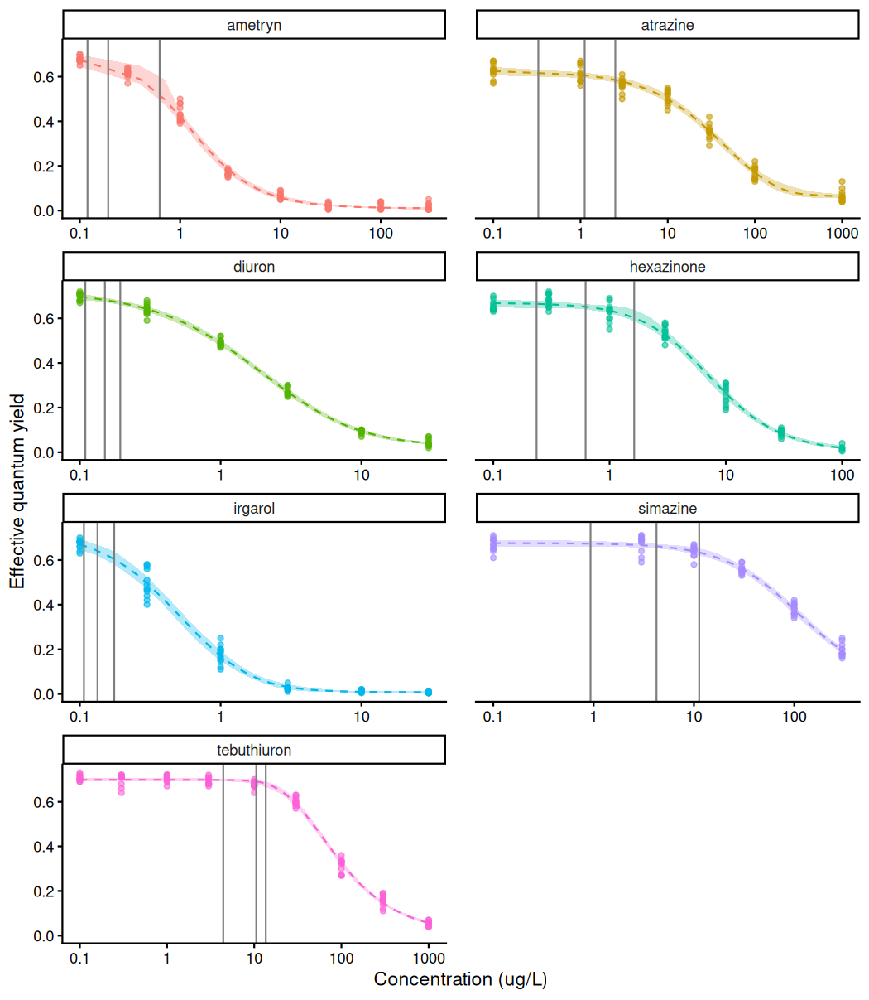
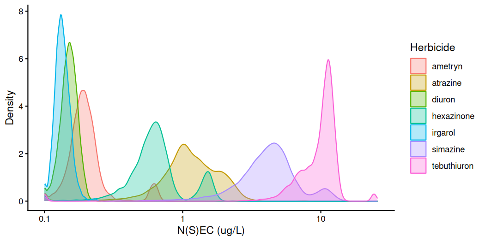
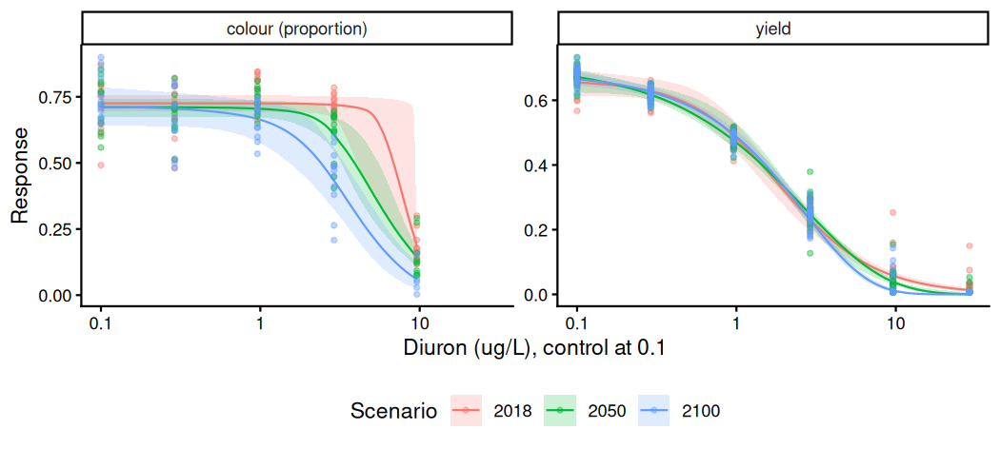
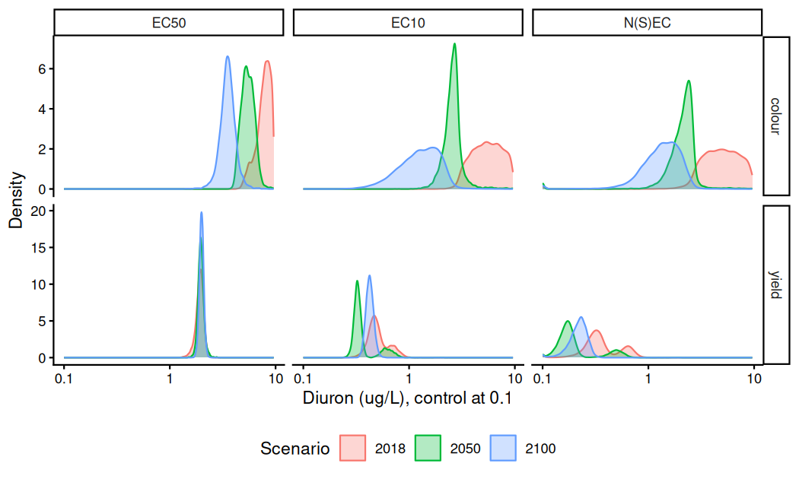
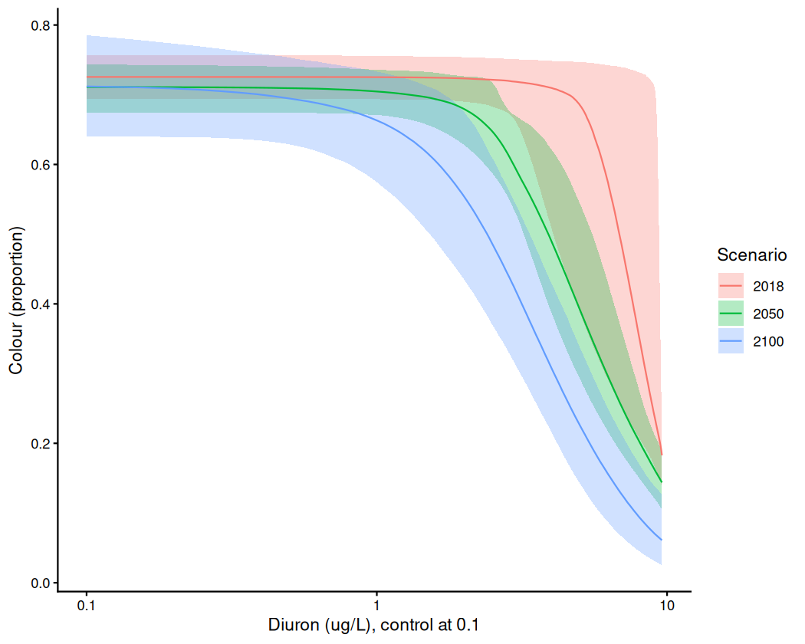
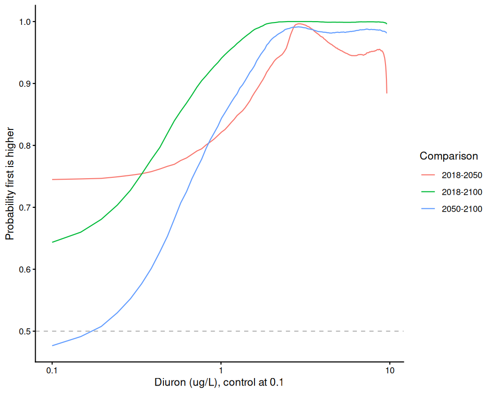

With bayesnec we have included a function that allows
comparisons of posterior predictions. The main focus here is to showcase
how the user can fit several different bnec model fits and
can compare differences in the posterior predictions across these fits
for individual toxicity estimates (e.g. NEC, N(S)EC,
NSEC or ECx) or across a range of predictor values.
The compare_posterior function was developed with the
intention of comparing model sets based on different data to assess
statistically the difference in either the toxicity estimates, or across
the entire fitted curve, amongst factors of interest. Examples would
include assessing for changes in toxicity across different WET tests
through time, or comparing different levels of a factor treatment
variable (such as climate change scenarios), to look at how these
interact with concentration to impact toxicity.
A factor covariate can be fitted in bayesnec in three
ways, and these answer different questions. A group-level term written
into the formula (ogl(), (par | group) or
pgl()) fits one model to all of the data, treating the
levels as a sample from a population and estimating how far each level
departs from a curve the levels share. Alternatively,
bnec_group() fits each level separately, so that each level
has its own model set and its own functional form and shares nothing
with the other levels. This is the approach required where the levels
are fixed and of interest in themselves. A bnec_group() fit
can also be refitted as a single model using bnec_joint(),
in which each level is fitted with the equation its own model weights
favour (by default) and has its own parameter values, but all levels are
estimated in one posterior. Which designs admit which of these
approaches is set out in the Grouping
and factor covariates vignette.
For each pair of fits, compare_posterior pairs the
posterior draws of an estimate from one fit with those from the other at
random, and subtracts one from the other within each pair. It returns
these differences, and in prob_diff the proportion of them
above zero, i.e. the probability that the first fit has the higher
estimate. This proportion estimates a posterior probability where the
two posteriors are independent, which is the case for fits to separate
data that share no parameter, such as the levels of a
bnec_group() fit and every comparison in this vignette.
Where two estimates come from one posterior and share a parameter,
for example two levels of a bnec_joint() refit with a
common group-level term, they can be correlated, and pairing their draws
at random discards that correlation. The contrast is then taken draw by
draw, from the draws that ecx() returns for each level of
the refit under posterior = TRUE, as shown for copper and
zinc in the Grouping
and factor covariates vignette. Where two fits share data, such as
two equations of one model set, prob_diff describes how far
their posteriors overlap and cannot be read directly as a posterior
probability (see the section What the comparison estimates in
?compare_posterior).
Below we demonstrate compare_posterior on two published
datasets that are included in bayesnec, each fitted
separately by level using bnec_group(). In the first, the
levels are seven photosystem II herbicides tested on the coral
Seriatopora hystrix (Jones and Kerswell
2003). In the second, the levels are three climate scenarios
under which the coral Acropora millepora was exposed to one of
those herbicides, diuron (Flores et al.
2021), and the comparison is the one that study was designed to
make.
To run this vignette, we will also need some additional packages
Both concentration series span two or more orders of magnitude, so
each figure is drawn on a log axis. ggbnec_data() and
compare_posterior() return the predictor on the scale it
was recorded on, having already inverted any transformation written
inside crf(), so the axis is set by transforming the scale
and not the values. The helper group_curves() collects the
fitted curve of each level of a bnec_group() fit into one
data frame, so that a single ggplot() call can draw them
together.
log_x <- scale_x_continuous(transform = "log10",
labels = function(x) signif(x, 2))
group_curves <- function(x) {
do.call(rbind, Map(function(f, lev) data.frame(level = lev, ggbnec_data(f)),
x$fits, x$levels))
}herbicide (Jones and Kerswell
2003) contains the effective quantum yield of photosystem II in
the symbiotic dinoflagellates of the coral Seriatopora hystrix,
measured after a ten-hour exposure to each of seven photosystem II
inhibiting herbicides (https://doi.org/10.3354/meps261149). Three replicate
containers of four corals were held at each concentration. However, the
container is not recorded in herbicide, so no group-level
term can be included for it and the fits below include none.
data(herbicide)
ggplot(herbicide, aes(x = concentration, y = fvfm, colour = herbicide)) +
geom_point(alpha = 0.6) +
facet_wrap(~herbicide, ncol = 2, scales = "free_x") +
log_x +
scale_colour_hue(guide = "none") +
theme_classic() +
theme(panel.spacing.x = unit(1.2, "lines")) +
labs(x = "Concentration (ug/L)", y = "Effective quantum yield")
plot of chunk exmp4-herbicide-raw
Effective quantum yield declines with concentration for all seven herbicides, although the concentration at which it does so differs by about two orders of magnitude among them. For example, yield is at half its lowest-dose mean by 1 µg/L of irgarol and 3 µg/L of diuron or ametryn, against 100 µg/L of tebuthiuron and 300 µg/L of simazine (the highest concentration simazine was tested at).
fvfm is recorded in steps of 0.01, the smallest positive
reading is 0.01, and 23 of the 580 readings are 0, all of them for
ametryn, hexazinone and irgarol at 10 µg/L or more, where their curves
fall lowest. A 0 is therefore a yield below 0.005 that was rounded down,
and not a separate outcome (see Zeros from rounding in Hurdle
and zero-inflated models). We treat these readings as left-censored
at 0.005, which states only that the true value is at or below that
bound (see Censoring in Single
model usage). Shifting each 0 to a fixed small value instead, as
bnec() does for an uncensored Beta response, would treat
that value as a measurement.
herbicide$censoring <- ifelse(herbicide$fvfm == 0, "left", "none")
# A censored row carries its bound: half the recording step of 0.01.
herbicide$fvfm_cens <- ifelse(herbicide$fvfm == 0, 0.005, herbicide$fvfm)The seven herbicides are a fixed set chosen for their interest, and
not a sample from a larger population of herbicides. Their functional
forms may differ, and there is no common curve towards which they should
be shrunk, so we fit each herbicide separately using
bnec_group(). We use the "decline" model set,
which is the set used for Figure 11 of Fisher et
al. (2024).
fits_herb <- bnec_group(fvfm_cens | cens(censoring) ~
crf(log(concentration), "decline"),
data = herbicide, group_var = "herbicide",
family = Beta(link = "identity"),
seed = 228, refresh = 0)Each herbicide is screened separately because each was fitted separately, so an equation that fails for one herbicide is removed from that herbicide without discarding its fits for the other six.
fits_herb <- screen_models(fits_herb, group_action = "per_level")
#> Screening level "ametryn".
#> All 12 candidate models passed the sampler screen (Rhat <= 1.01, ESS >= 400, divergences <= 10).
#> Screening level "atrazine".
#> Dropping 1 of 12 candidate models that failed the sampler screen:
#> - ecxll5: 30 divergent transitions
#> Fitted models are: nec3param nec4param ecxexp ecx4param ecxwb1 ecxwb2 ecxwb1p3 ecxwb2p3 ecxll4 ecxll3 ecxflat
#> The fitted ecxflat curve does not fall to the control's 0.01 quantile within the predictor range for 7920 of 8000 draws. The NSEC summary is censored at 6.91: those draws keep their rank in it and are given no value.
#> Screening level "diuron".
#> All 12 candidate models passed the sampler screen (Rhat <= 1.01, ESS >= 400, divergences <= 10).
#> Screening level "hexazinone".
#> All 11 candidate models passed the sampler screen (Rhat <= 1.01, ESS >= 400, divergences <= 10).
#> Screening level "irgarol".
#> All 12 candidate models passed the sampler screen (Rhat <= 1.01, ESS >= 400, divergences <= 10).
#> Screening level "simazine".
#> Dropping 1 of 12 candidate models that failed the sampler screen:
#> - ecxll5: ESS 163.4, 113 divergent transitions
#> Fitted models are: nec3param nec4param ecxexp ecx4param ecxwb1 ecxwb2 ecxwb1p3 ecxwb2p3 ecxll4 ecxll3 ecxflat
#> The fitted ecxflat curve does not fall to the control's 0.01 quantile within the predictor range for 7920 of 8000 draws. The NSEC summary is censored at 5.7: those draws keep their rank in it and are given no value.
#> Screening level "tebuthiuron".
#> All 12 candidate models passed the sampler screen (Rhat <= 1.01, ESS >= 400, divergences <= 10).The screen removes ecxll5 for atrazine and simazine (the
messages above give the criterion each failed), so each herbicide keeps
11 or 12 equations of "decline".
summary() on a bayesnecgroupfit prints a
full summary for each level, which for seven herbicides is several
hundred lines. Here we collate only the model weights, to show which
equations each herbicide supports.
herb_wi <- do.call(rbind, Map(function(f, lev) {
w <- summary(f)$mod_weights[, "wi"]
data.frame(herbicide = lev, equation = names(w), wi = as.numeric(w))
}, fits_herb$fits, fits_herb$levels))
# Order the equations by their total weight, so those in use are at the top.
herb_wi$equation <- reorder(factor(herb_wi$equation), herb_wi$wi, sum)
ggplot(herb_wi, aes(x = herbicide, y = equation, fill = wi)) +
geom_tile(colour = "white", linewidth = 0.4) +
geom_text(aes(label = ifelse(wi >= 0.05, sprintf("%.2f", wi), "")),
size = 2.7, colour = "grey15") +
scale_fill_gradient(low = "white", high = "#2c6a5a", name = "weight",
limits = c(0, 1)) +
theme_classic() +
theme(axis.text.x = element_text(angle = 30, hjust = 1),
axis.line = element_blank(), axis.ticks = element_blank()) +
labs(x = NULL, y = NULL)
plot of chunk exmp4-herb-weights
The herbicides differ in which equations describe them. For example,
tebuthiuron puts 0.52 of its weight on ecxwb2p3, which
receives no more than 0.11 for any other herbicide, and atrazine puts
0.65 of its weight on ecxwb1, which receives no more than
0.27 for any other herbicide. The number of equations given a weight of
0.05 or more (the labelled cells) is 3 for ametryn, atrazine and
tebuthiuron, 4 for hexazinone and irgarol, and 5 for diuron and
simazine. No herbicide gives nec3param or
nec4param a weight of 0.05 or more. This suggests that
fitting the levels separately is appropriate here, because the curve
they would be shrunk towards is not one the data agree on.
ggplot(group_curves(fits_herb), aes(x = x_e, colour = level, fill = level)) +
geom_polygon(aes(y = y_ci), colour = NA, alpha = 0.3) +
# Give the line only the rows of the curve; the band's return half has no y_e.
geom_line(data = ~ subset(.x, !is.na(y_e)), aes(y = y_e), linetype = 2) +
geom_point(aes(x = x_r, y = y_r), alpha = 0.6, size = 1.2) +
geom_vline(aes(xintercept = nec_vals), colour = "grey50") +
facet_wrap(~level, ncol = 2, scales = "free_x") +
log_x +
scale_colour_hue(guide = "none") +
scale_fill_hue(guide = "none") +
theme_classic() +
theme(panel.spacing.x = unit(1.2, "lines")) +
labs(x = "Concentration (ug/L)", y = "Effective quantum yield")
plot of chunk exmp4-herbicides
The fitted band follows the observations down for each herbicide, with the N(S)EC (grey lines, the median and 95% credible interval) at or a little before the concentration where the points leave the control level. The N(S)EC is the model-averaged no-effect estimate, based mainly on the NEC where threshold equations receive most of the weight and on the NSEC where smooth equations do. The threshold equations receive a total weight of at most 0.06 for any herbicide here, so the N(S)EC of each is in effect an NSEC. The response axis is shared and the concentration axis is not, so the panels are comparable in level but not in position. The seven curves have a similar shape and are located at different concentrations, which suggests that what separates the herbicides is where the curve falls, more than how it falls.
compare_posterior takes a bnec_group() fit
directly and compares its levels. Here we compare the N(S)EC across the
herbicides. The posterior draws for each herbicide are returned in
posterior_data, which we summarise first.
cmp_herb <- compare_posterior(fits_herb, comparison = "n(s)ec")
herb_post <- cmp_herb$posterior_data
herb_sum <- herb_post |>
group_by(model) |>
summarise(median = median(value), lower = quantile(value, 0.025),
upper = quantile(value, 0.975)) |>
arrange(median)
herb_sum
#> # A tibble: 7 × 4
#> model median lower upper
#> <chr> <dbl> <dbl> <dbl>
#> 1 irgarol 0.133 0.107 0.175
#> 2 diuron 0.151 0.109 0.194
#> 3 ametryn 0.192 0.119 0.625
#> 4 hexazinone 0.622 0.235 1.63
#> 5 atrazine 1.12 0.328 2.51
#> 6 simazine 4.23 0.931 11.3
#> 7 tebuthiuron 10.6 4.42 13.6The N(S)EC estimates span a factor of about 79, from irgarol at 0.133 µg/L (0.107–0.175) and diuron at 0.151 (0.109–0.194), through ametryn at 0.192, hexazinone at 0.622 and atrazine at 1.12, to simazine at 4.23 and tebuthiuron at 10.6 (4.42–13.6). These draws can also be plotted as densities.
ggplot(data = herb_post, mapping = aes(x = value)) +
geom_density(mapping = aes(group = model, colour = model, fill = model),
alpha = 0.3) +
log_x +
theme_classic() +
labs(x = "N(S)EC (ug/L)", y = "Density", fill = "Herbicide",
colour = "Herbicide")
plot of chunk exmp4-cmp-herbicides
This is the display shown in Figure 11 of Fisher et al. (2024). Irgarol and diuron, the most potent of the herbicides, overlap substantially: their intervals run from 0.107 to 0.175 and from 0.109 to 0.194 µg/L. The posteriors also differ in width as much as in position. For example, the interval for irgarol spans a factor of 1.6 from end to end and that for diuron a factor of 1.8, against 12.1 for simazine and 7.6 for atrazine. The posteriors of ametryn, atrazine, hexazinone, simazine and tebuthiuron have a second mode, near 0.62, 1.8, 1.5, 11 and 7.4 µg/L respectively. A model-averaged posterior is a mixture, and an equation with little weight that places its threshold elsewhere can appear as a second mode or a long tail, without changing the median.
The probability that the first herbicide of each pair has the higher
N(S)EC is returned in prob_diff, so a value near 0 or 1
separates two herbicides and one near 0.5 does not.
cmp_herb$prob_diff
#> comparison prob prob_lower prob_upper censored_first censored_second
#> 1 ametryn-atrazine 0.018627328 0.018627328 0.018627328 0 0
#> 2 ametryn-diuron 0.841730216 0.841730216 0.841730216 0 0
#> 3 ametryn-hexazinone 0.046380798 0.046380798 0.046380798 0 0
#> 4 ametryn-irgarol 0.922615327 0.922615327 0.922615327 0 0
#> 5 ametryn-simazine 0.010251281 0.010251281 0.010251281 0 0
#> 6 ametryn-tebuthiuron 0.011251406 0.011251406 0.011251406 0 0
#> 7 atrazine-diuron 0.986748344 0.986748344 0.986748344 0 0
#> 8 atrazine-hexazinone 0.816227028 0.816227028 0.816227028 0 0
#> 9 atrazine-irgarol 0.987498437 0.987498437 0.987498437 0 0
#> 10 atrazine-simazine 0.045130641 0.045130641 0.045130641 0 0
#> 11 atrazine-tebuthiuron 0.011626453 0.011626453 0.011626453 0 0
#> 12 diuron-hexazinone 0.013876735 0.013876735 0.013876735 0 0
#> 13 diuron-irgarol 0.729591199 0.729591199 0.729591199 0 0
#> 14 diuron-simazine 0.009626203 0.009626203 0.009626203 0 0
#> 15 diuron-tebuthiuron 0.011251406 0.011251406 0.011251406 0 0
#> 16 hexazinone-irgarol 0.987123390 0.987123390 0.987123390 0 0
#> 17 hexazinone-simazine 0.021877735 0.021877735 0.021877735 0 0
#> 18 hexazinone-tebuthiuron 0.011001375 0.011001375 0.011001375 0 0
#> 19 irgarol-simazine 0.009876235 0.009876235 0.009876235 0 0
#> 20 irgarol-tebuthiuron 0.011251406 0.011251406 0.011251406 0 0
#> 21 simazine-tebuthiuron 0.076384548 0.076384548 0.076384548 0 0Of the 21 pairs, 16 have a probability below 0.05 or above 0.95. For example, the probability that irgarol has the higher N(S)EC is 0.010 against simazine and 0.011 against tebuthiuron. The least separated pair is diuron and irgarol at 0.730, the most potent of the set, followed by atrazine and hexazinone at 0.816, ametryn and diuron at 0.842, ametryn and irgarol at 0.923, and simazine and tebuthiuron at 0.076.
The N(S)EC is a no-effect estimate, and it is not what Jones and Kerswell (2003) report. They report
EC50 values (the concentration at which yield is halved), so the
comparison with the source study uses ecx().
herb_ec50 <- ecx(fits_herb, ecx_val = 50)
herb_ec50
#> level Q50 Q2.5 Q97.5 bound_Q50 bound_Q2.5 bound_Q97.5
#> 1 ametryn 1.4525671 1.290950 1.6028760
#> 2 atrazine 39.4168890 34.928425 44.1435047
#> 3 diuron 2.0418154 1.899820 2.1894078
#> 4 hexazinone 7.3754008 6.731899 8.0245874
#> 5 irgarol 0.5387713 0.479069 0.5954517
#> 6 simazine 124.2181364 112.629884 136.2658496
#> 7 tebuthiuron 90.3584313 84.519524 95.2532588Jones and Kerswell (2003) give EC50 values of 0.7 µg/L for irgarol, 1.7 for ametryn, 2.3 for diuron, 8.8 for hexazinone, 45 for atrazine, 150 for simazine and 175 for tebuthiuron. For six of the seven, the published value is between 13 and 30 per cent above the one here, and both studies rank them in one order. Tebuthiuron is the exception, at 52 per cent of the published value, and it is also the herbicide whose order differs: here it is more toxic than simazine, whereas in the source study it is less so. The published and fitted estimates were derived differently. Jones and Kerswell (2003) interpolated linearly between the tested concentrations (in ToxCalc 5.0), while the values above are a model average over 11 or 12 fitted curves. Linear interpolation across a log-spaced series follows the chord of a curve that is concave over that interval, which places the half-effect concentration higher than a fitted curve would, and this may explain why the published value is higher for all seven herbicides. Nothing in these data indicates which estimate is closer to the truth for tebuthiuron.
coral_colour and coral_pam contain two
endpoints from one experiment, in which fragments of the coral
Acropora millepora were exposed to diuron for 14 days under
three climate scenarios (Flores et al. 2021,
https://doi.org/10.1016/j.marpolbul.2021.112582). The scenarios
are combinations of temperature and dissolved carbon dioxide, labelled
by the year they represent: 28.1 °C at 397 ppm for present-day
conditions (2018), and projections under the high-emissions pathway
RCP8.5 of 29.1 °C at 680 ppm (2050) and 30.2 °C at 858 ppm (2100). Three
replicate chambers were run at each combination of scenario and
concentration, with four coral fragments in each. Jones and Kerswell (2003) found the effect of
diuron on S. hystrix to be inversely related to temperature,
which is the observation Flores et al.
(2021) tested by crossing diuron with warming.
Both endpoints were measured on each fragment. yield in
coral_pam is the effective quantum yield of photosystem II,
the quantity also recorded in herbicide, read by
pulse-amplitude modulated fluorometry. proportion in
coral_colour is a colour index used as a measure of
bleaching, derived from photographs of the fragments and rescaled
between the smallest and largest values observed (see
?coral_colour). Flores et al.
(2021) report that all corals at 9.6 and 29 µg/L had died after
10 to 11 days of exposure. The corals at 9.6 µg/L had bleached by 10
days and were photographed then, whereas those at 29 µg/L died before
they could be photographed. coral_colour therefore has five
concentrations (0, 0.29, 0.96, 2.9 and 9.6 µg/L), and
coral_pam has a sixth, 29 µg/L. At 9.6 µg/L,
coral_colour has a colour score for 10 of the 12 fragments
under 2050 and 5 of the 12 under 2100.
Flores et al. (2021) compared EC50
values between the scenarios using bayesnec, and found that
the colour index EC50 was lower under both future scenarios than under
present-day conditions, with probabilities of 0.956 (2050) and 0.970
(2100). For yield the corresponding probabilities were 0.615 and 0.539,
so the scenarios were not separated.
Both endpoints include an untreated control recorded as a
concentration of 0, which has no position on a log axis, and
bnec() refuses crf(log(diuron)) because the
logarithm of 0 is not finite. We therefore substitute 0.1 µg/L for the
control. The non-zero treatments (0.29, 0.96, 2.9, 9.6 and, for yield
only, 29 µg/L) are separated by steps of approximately half a log unit
(a factor of about three), and the value 0.1 is one further half-log
step below the lowest treatment, rounded. The substitution is made here
and not in the shipped data, and an estimate returned near 0.1 µg/L
would describe the substitution and not diuron.
63 of the 414 yield readings are 0, all of them at 9.6 and 29 µg/L.
Flores et al. (2021) repeated the yield
measurement at 14 days only up to 2.9 µg/L, so the readings at the two
highest concentrations were taken at 7 days, before those corals died.
Yield is recorded to three decimal places, but no reading is between 0
and 0.007, the smallest positive value. Of the 61 fragments read twice
at 9.6 and 29 µg/L, 21 gave one reading of 0 and one of up to 0.143. A 0
is therefore a reading at the floor of the fluorometer, with a true
value at or below the smallest positive reading, and not a separate
outcome such as a dead fragment, which a hurdle model would describe. As
for the zeros in herbicide, we treat these readings as
left-censored, here at the smallest positive reading.
The three scenarios are fixed levels of interest, so each is fitted
separately using bnec_group(). Each chamber was held at one
concentration and contained several fragments, so the fragments within a
chamber are not independent observations, and we include a group-level
term on chamber (ogl(chamber)) to allow for this. The Grouping
and factor covariates vignette describes what a term of this kind
estimates where each of its levels is observed at a single
concentration, and the model weights of a set fitted with it leave out
each chamber whole (see the loo_controls argument of
bnec()).
The colour design has five concentrations, which appears to be too
few to estimate both asymptotes of an equation with four curve
parameters reliably. We therefore restrict the model set to four
equations with three curve parameters (nec3param,
ecxll3, ecxwb1p3 and ecxwb2p3),
and use this set for yield as well, so that the endpoints are compared
on one set of equations.
fits_colour <- bnec_group(
proportion ~ crf(log(diuron_adj),
c("nec3param", "ecxll3", "ecxwb1p3", "ecxwb2p3")) +
ogl(chamber),
data = coral_colour, group_var = "climate",
family = Beta(link = "identity"), seed = 228, refresh = 0)
fits_yield <- bnec_group(
yield_cens | cens(censoring) ~
crf(log(diuron_adj), c("nec3param", "ecxll3", "ecxwb1p3", "ecxwb2p3")) +
ogl(chamber),
data = coral_pam, group_var = "climate",
family = Beta(link = "identity"), seed = 228, refresh = 0)
fits_colour <- screen_models(fits_colour, group_action = "per_level")
#> Screening level "2018".
#> Dropping 1 of 4 candidate models that failed the sampler screen:
#> - ecxwb2p3: 70 divergent transitions
#> Fitted models are: nec3param ecxll3 ecxwb1p3
#> Screening level "2050".
#> All 4 candidate models passed the sampler screen (Rhat <= 1.01, ESS >= 400, divergences <= 10).
#> Screening level "2100".
#> Dropping 1 of 4 candidate models that failed the sampler screen:
#> - nec3param: ESS 393.3
#> Fitted models are: ecxll3 ecxwb1p3 ecxwb2p3
#> The leave-one-group-out score has Pareto k at or above 0.7 for 1 of 15 levels of chamber in ecxwb1p3 (weight
#> 0.39); 1 of 15 levels of chamber in ecxll3 (weight 0.33); 1 of 15 levels of chamber in ecxwb2p3 (weight 0.28). The
#> affected scores are approximate; loo_controls = list(refit = TRUE) replaces them by refitting the equation without
#> each level.
fits_yield <- screen_models(fits_yield, group_action = "per_level")
#> Screening level "2018".
#> Dropping 1 of 4 candidate models that failed the sampler screen:
#> - nec3param: Rhat 1.014
#> Fitted models are: ecxll3 ecxwb1p3 ecxwb2p3
#> The leave-one-group-out score has Pareto k at or above 0.7 for 2 of 18 levels of chamber in ecxll3 (weight 0.74); 1 of 18 levels of chamber in ecxwb2p3 (weight 0.26). The affected scores are approximate; loo_controls = list(refit = TRUE) replaces them by refitting the equation without each level.Screening level "2050".
#> All 4 candidate models passed the sampler screen (Rhat <= 1.01, ESS >= 400, divergences <= 10).
#> Screening level "2100".
#> All 4 candidate models passed the sampler screen (Rhat <= 1.01, ESS >= 400, divergences <= 10).The screen removes ecxwb2p3 from the 2018 colour fit,
nec3param from the 2100 colour fit and
nec3param from the 2018 yield fit, and the messages above
give the criterion that each failed. Where the leave-one-group-out score
has a Pareto k at or above 0.7 for a chamber, the messages also
name the equation, and the contribution of that chamber to the model
weights is approximate. loo_controls = list(refit = TRUE)
would replace it by refitting each equation without the chamber, which
we have not done here.
rbind(data.frame(endpoint = "colour (proportion)", group_curves(fits_colour)),
data.frame(endpoint = "yield", group_curves(fits_yield))) |>
ggplot(aes(x = x_e, colour = level, fill = level)) +
geom_polygon(aes(y = y_ci), colour = NA, alpha = 0.2) +
# Give the line only the rows of the curve; the band's return half has no y_e.
geom_line(data = ~ subset(.x, !is.na(y_e)), aes(y = y_e)) +
geom_point(aes(x = x_r, y = y_r), alpha = 0.4, size = 1) +
facet_wrap(~endpoint, scales = "free_y") +
log_x +
theme_classic() +
theme(legend.position = "bottom") +
labs(x = "Diuron (ug/L), control at 0.1", y = "Response",
colour = "Scenario", fill = "Scenario")
plot of chunk exmp4-coral-fits
The scenarios appear to separate in colour and barely at all in yield. For example, mean colour at 2.9 µg/L is 0.724, 0.604 and 0.446 from 2018 to 2100, whereas mean yield differs between scenarios by at most 0.014 at each concentration below 9.6 µg/L.
We compare three estimates across the scenarios, for both endpoints:
the EC50, which is the estimate Flores et al.
(2021) compared, and the EC10 and the N(S)EC, which describe
smaller effects or none. compare_posterior is called once
for each estimate and endpoint, and the table collates
prob_diff from each call, i.e. the probability that the
first scenario of each pair has the higher estimate.
compare_scenarios <- function(fit) {
list(EC50 = compare_posterior(fit, comparison = "ecx", ecx_val = 50),
EC10 = compare_posterior(fit, comparison = "ecx", ecx_val = 10),
"N(S)EC" = compare_posterior(fit, comparison = "n(s)ec"))
}
cmp_coral <- list(colour = compare_scenarios(fits_colour),
yield = compare_scenarios(fits_yield))
coral_probs <- bind_rows(lapply(cmp_coral, function(cmps) {
data.frame(comparison = cmps$EC50$prob_diff$comparison,
sapply(cmps, function(x) x$prob_diff$prob), check.names = FALSE)
}), .id = "endpoint")
coral_probs
#> endpoint comparison EC50 EC10 N(S)EC
#> 1 colour 2018-2050 0.934375 0.980500 0.968125
#> 2 colour 2018-2100 0.998625 0.998250 0.988500
#> 3 colour 2050-2100 0.980375 0.958500 0.849000
#> 4 yield 2018-2050 0.428625 0.838375 0.838625
#> 5 yield 2018-2100 0.352750 0.782250 0.913250
#> 6 yield 2050-2100 0.420875 0.191875 0.296250The posterior draws behind each probability are returned in
posterior_data, and we plot them as densities, with one
panel for each endpoint and estimate.
coral_post <- bind_rows(lapply(cmp_coral, function(cmps) {
bind_rows(lapply(cmps, `[[`, "posterior_data"), .id = "estimate")
}), .id = "endpoint")
coral_post$estimate <- factor(coral_post$estimate,
levels = c("EC50", "EC10", "N(S)EC"))
ggplot(data = coral_post, mapping = aes(x = value)) +
geom_density(mapping = aes(group = model, colour = model, fill = model),
alpha = 0.3) +
facet_grid(endpoint ~ estimate, scales = "free_y") +
log_x +
theme_classic() +
theme(legend.position = "bottom") +
labs(x = "Diuron (ug/L), control at 0.1", y = "Density", fill = "Scenario",
colour = "Scenario")
plot of chunk exmp4-cmp-scenarios
For the colour EC50 (top left panel), the probability that the 2018
estimate is the higher is 0.934 against the 2050 scenario and 0.999
against the 2100 scenario, where Flores et al.
(2021) report 0.956 and 0.970. These could not be expected to
match exactly, because our model differs from theirs in two respects.
The fits here use four equations with three curve parameters, because
the five colour concentrations are too few to estimate both asymptotes
of the equations with four, whereas Flores et al.
(2021) averaged over a larger set (their Table S2). The fits here
also include a group-level term for chamber (ogl(chamber)),
which Flores et al. (2021) did not fit.
The EC50 values are also defined differently. The posterior medians are
7.9, 5.4 and 3.5 µg/L for 2018, 2050 and 2100, against the values of
6.05, 4.99 and 4.86 µg/L that Flores et al.
(2021) report. They measured each scenario against one reference
response (halfway between the mean 2018 control and the mean 2100
response at the highest concentration), whereas ecx()
measures each scenario against its own control. The 95% credible
interval of the 2018 EC50 is 5.3 to 9.5 µg/L, which probably reflects
the colour design: under 2018 the mean colour at 2.9 µg/L is still at
the control level, and the only higher concentration is 9.6 µg/L, so
there are no observations within the range of concentrations where the
2018 response declines.
For colour, the order of the scenarios by increasing posterior median is 2100, 2050 and 2018 for all three estimates. Across the three estimates, the probability that the 2018 estimate is the higher ranges from 0.934 to 0.999 against the 2050 and 2100 scenarios. The 2018 posteriors are also wide for the EC10 and the N(S)EC (e.g. a 95% credible interval for the EC10 of 3.1 to 9.3 µg/L, against 1.8 to 3.9 µg/L for 2050), which is again likely to reflect the absence of observations between 2.9 and 9.6 µg/L.
For yield, the EC50 posteriors of the three scenarios overlap almost
completely (bottom left panel), with probabilities from 0.35 to 0.43,
which is consistent with the probabilities of 0.615 and 0.539 that Flores et al. (2021) report for the yield EC50.
None of the yield probabilities, for any of the three estimates, is
below 0.05 or above 0.95. The model weights favour ecxll3
under 2018 (0.74), and ecxwb1p3 under 2050 and 2100 (0.81
and 1.00). The EC10 and the N(S)EC differ more between the scenarios
than the EC50 does (e.g. a 95% credible interval for the N(S)EC of 0.18
to 0.75 µg/L under 2018, against 0.13 to 0.29 µg/L under 2100), although
mean yield differs between scenarios by at most 0.014 at each
concentration below 9.6 µg/L. The medians of both estimates are below
0.96 µg/L, where the only observations are at the control and 0.29 µg/L,
and there the fitted curve follows the shape of the equation the weights
favour. The difference is therefore likely to reflect that choice of
equation, and it should not be read as an effect of climate from these
data.
The user can also compare the posterior fitted values across the full
range of concentrations, using comparison = "fitted". We
increase resolution from its default of 50, because the
concentrations at which predictions are made are evenly spaced on the
recorded scale, and the lower half of a log axis would otherwise contain
only a few of them.
cmp_colour_fit <- compare_posterior(fits_colour, comparison = "fitted",
resolution = 200)
head(cmp_colour_fit$posterior_data)
#> model x Estimate Q2.5 Q97.5
#> 1 2018 0.1000000 0.7254966 0.6937514 0.7568346
#> 2 2018 0.1477387 0.7254966 0.6937514 0.7568346
#> 3 2018 0.1954774 0.7254966 0.6937514 0.7568328
#> 4 2018 0.2432161 0.7254956 0.6937514 0.7567826
#> 5 2018 0.2909548 0.7254916 0.6937514 0.7567707
#> 6 2018 0.3386935 0.7254796 0.6937514 0.7567652In the case of comparison = "fitted" the elements
returned by compare_posterior are data frames, with summary
values of the posterior, of the differences and of the probabilities for
each value of the predictor, for each scenario or pair of scenarios.
ggplot(data = cmp_colour_fit$posterior_data) +
geom_ribbon(mapping = aes(x = x, ymin = Q2.5, ymax = Q97.5, fill = model),
alpha = 0.3) +
geom_line(mapping = aes(x = x, y = Estimate, colour = model),
linewidth = 0.5) +
log_x +
theme_classic() +
labs(x = "Diuron (ug/L), control at 0.1", y = "Colour (proportion)",
colour = "Scenario", fill = "Scenario")
plot of chunk exmp4-colour-fitted
ggplot(data = cmp_colour_fit$prob_diff) +
geom_hline(yintercept = 0.5, colour = "grey70", linetype = 2) +
geom_line(mapping = aes(x = x, y = prob, colour = comparison),
linewidth = 0.5) +
log_x +
theme_classic() +
labs(x = "Diuron (ug/L), control at 0.1",
y = "Probability first is higher", colour = "Comparison")
plot of chunk exmp4-colour-prob
The fitted curves for the three scenarios start at a similar colour (0.71 to 0.73 at the control), and their medians fall 10 per cent below the control value in the order 2100 (1.3 µg/L), 2050 (2.6 µg/L) and 2018 (5.5 µg/L). The band for 2018 is widest at 8.9 µg/L, which is again likely to reflect the absence of observations between 2.9 and 9.6 µg/L. The probability that the 2018 curve is the higher first exceeds 0.9 at 0.77 µg/L against the 2100 curve and at 1.7 µg/L against the 2050 curve, and at the highest concentration it is 0.996 and 0.884, respectively. The 2050 and 2100 curves are most clearly separated at 2.9 µg/L (a probability of 0.992), and the probability is 0.982 at the highest concentration. This suggests that the scenarios differ over the range of concentrations in which the colour response declines under at least one scenario.
The fits shown were made when this vignette was precompiled, so the
estimates are those of the package version it ships with. No call names
iter, warmup or control, so the
defaults of bnec() apply (4 chains of 10000 iterations with
8000 warmup), under seed = 228.
compare_posterior pairs the draws under its own
seed argument, so its results do not depend on the
session’s random number stream.
packageVersion("bayesnec")
#> [1] '2.1.3.44'
packageVersion("brms")
#> [1] '2.23.0'
R.version.string
#> [1] "R version 4.6.1 (2026-06-24)"herbicide was built from the data of Jones and Kerswell (2003) by
data-raw/herbicide_data.R, and coral_colour
and coral_pam from the records behind Flores et al. (2021) by
data-raw/coral_diuron.R. The source records for the coral
data are not distributed with the package, although the scripts are, and
the manual pages state what was derived and how.